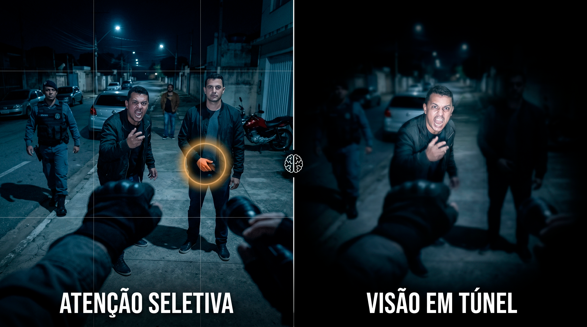
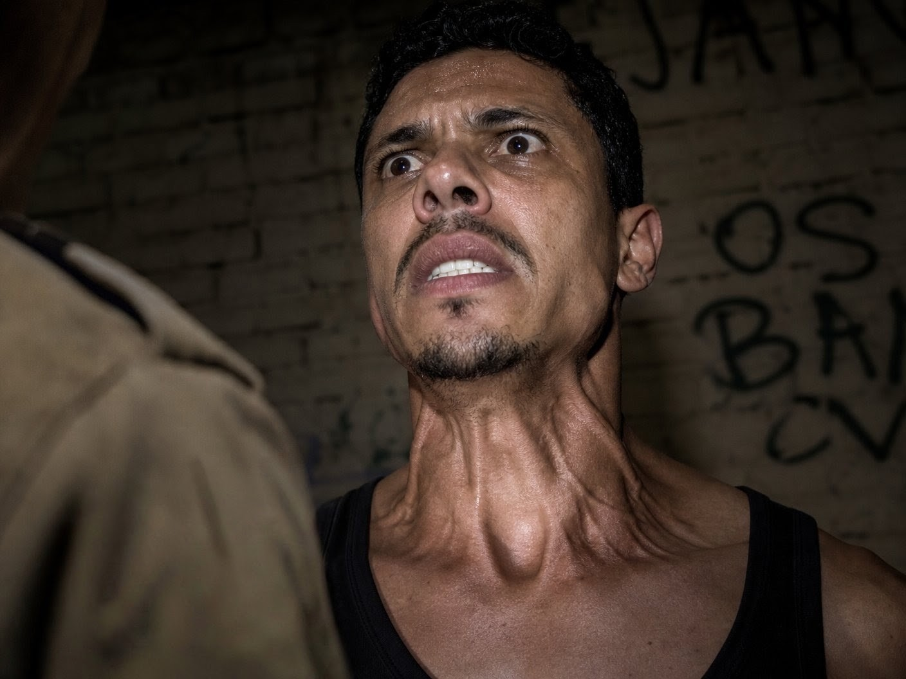
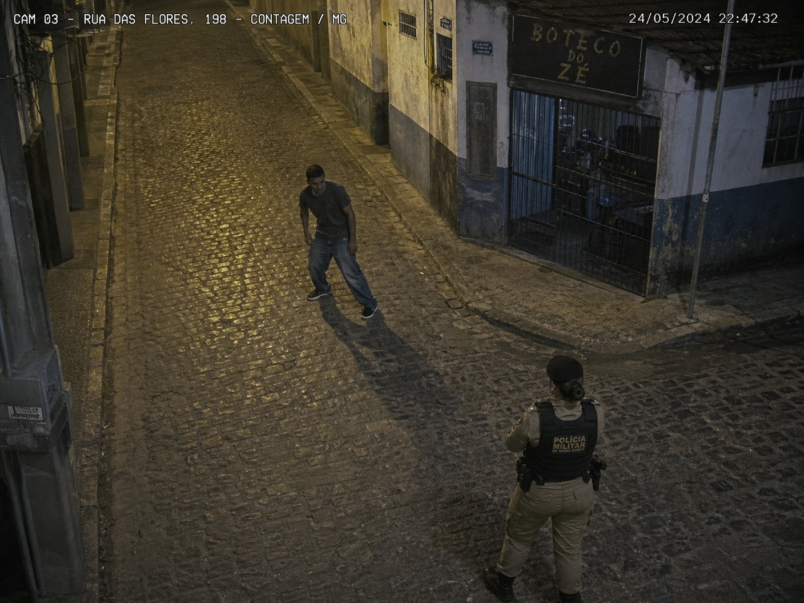
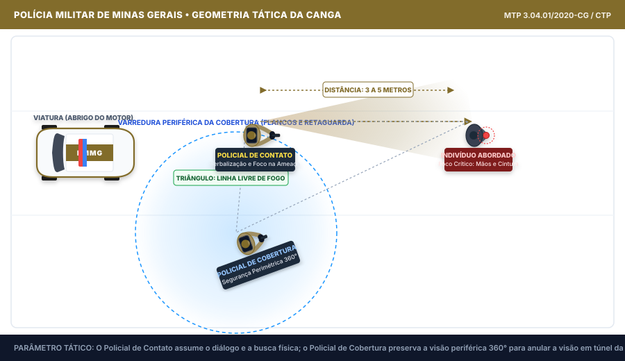
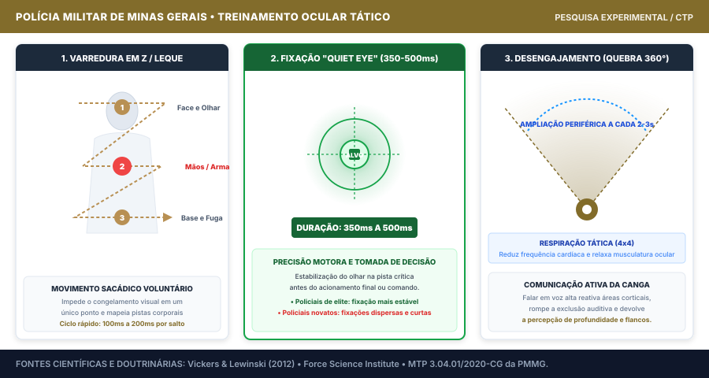

Diagnóstico Situacional, Filtros Cognitivos e Doutrina de Intervenção Policial Militar (MTP 01/02)
No teatro operacional, o policial militar atua sob constante sobrecarga de estímulos visuais, sonoros e espaciais. A capacidade de processamento neural é finita (Kahneman, 1973). A preservação da vida e a eficácia operacional dependem da integração técnica entre dois processos complementares:
Mecanismo neurofisiológico interno de triagem sensorial. Permite ao militar filtrar o ruído irrelevante do ambiente e focar seus recursos cognitivos nas pistas que apresentam relevância tática imediata.
Aplicação técnico-operacional do filtro atencional. Consiste em inspecionar e interpretar atitudes, sinais biomecânicos e conformações anatômicas (mãos, cintura, linha de visão) que denunciam agressão, fuga ou emboscada.
Andamento sequencial do ciclo perceptual no confronto:
Em situações de confronto armado iminente, a descarga simpática altera drasticamente o processamento sensorial do militar. A resposta fisiológica pode manifestar-se de duas formas:

Figura 1 — Comparativo Operacional: Atenção Seletiva (foco na ameaça armada com consciência situacional) vs. Visão em Túnel (fixação no ruído dramático e perda da ameaça real). (Fonte: Centro de Treinamento Profissional — CTP / PMMG)
O operador foca prioritariamente no ponto crítico de letalidade (a mão que acessa uma arma), mas mantém a percepção espacial ativa para monitorar o parceiro, transeuntes e abrigos balísticos.
Estreitamento involuntário do campo visual em até 70% e exclusão auditiva. O cérebro colapsa no estímulo de maior impacto sensorial (ex.: indivíduo desarmado aos gritos), gerando cegueira para o atirador real oculto.
Pesquisas do Force Science Institute e a doutrina do MTP 01 identificam três limitações perceptuais que afetam a tomada de decisão policial:
Ocorrência de falha no registro de um estímulo visual crítico porque a capacidade cognitiva está integralmente alocada em tarefa secundária (ex.: manusear rádio comunicador ou prancheta e não registrar o saque da arma do suspeito).
Incapacidade do sistema visual de perceber alterações discretas no cenário entre intervalos de observação (ex.: o indivíduo que repousava a mão na perna agora apoia os dedos na empunhadura de uma lâmina sob a vestimenta).
Interpretação da cena orientada por expectativa pré-concebida (ex.: classificar a ocorrência previamente como ocorrência de rotina ou trote e negligenciar sinais evidentes de emboscada).
Ações agressivas contra policiais são precedidas por indicadores físicos e comportamentais. O militar treinado reconhece esses sinais antes do disparo:

1. Tensão muscular, mandíbula travada e fixação visual de confronto. (Fonte: MTP 01 / Doutrina PMMG)
2. Mãos no bolso ou cintura: o risco letal concentra-se prioritariamente nas mãos. (Fonte: MTP 02 / PMMG)

3. Varredura de testemunhas e postura angular preparatória de fuga ou saque. (Fonte: Force Science Institute)
Diretriz operacional de segurança:
Fundamento Doutrinário: As mãos constituem o ponto de maior risco letal imediato, enquanto a linha de visão indica a intenção de ação ou fuga. O policial militar deve manter vigilância ininterrupta sobre as mãos do abordado e emitir ordens diretas para sua exibição imediata.
Como a capacidade cognitiva individual é limitada diante da alta tensão, a doutrina da PMMG estabelece a divisão sistemática de papéis na canga operacional (MTP 01 e MTP 02):

Figura 2 — Geometria Tática da Canga, Triângulo Defensivo e Linha Livre de Fogo Cruzado. (Fonte: MTP 3.04.01/2020-CG — PMMG)
Conduz o diálogo tático, emite as ordens verbais de comando e realiza a busca pessoal. Seu foco atencional é necessariamente estreito e direcionado ao indivíduo abordado.
Posiciona-se no vértice do triângulo defensivo com arma em pronto-baixo/abrigo. Sua atribuição exclusiva é a segurança perimétrica 360°, monitorando flancos e retaguarda sem intervir na busca física.
Pesquisas neurofisiológicas de Vickers & Lewinski (2012) comprovam que policiais de alta performance realizam fixações oculares controladas antes da tomada de decisão e do disparo:

Figura 3 — Padrão Sacádico em Z, Fixação Ocular Estável ("Quiet Eye") e Desengajamento Periférico. (Fonte: Vickers & Lewinski, 2012 / Force Science Institute)
Mecanismo Fisiológico: Movimento sacádico voluntário entre face, linha de mãos/cintura e base corporal.
Mecanismo Fisiológico: Estabilização foveal sobre o ponto crítico de letalidade antes do comando ou engajamento motor.
Mecanismo Fisiológico: Reativação cortical da linguagem e estímulo vagal para desacelerar os batimentos cardíacos.
Fundamentação Doutrinária (MTP 01 e MTP 02): A atribuição funcional precípua da Cobertura é a proteção perimétrica e a antecipação de ameaças aos olhos do Contato. Diante do sinal biomecânico de pré-agressão (mão na linha de cintura), a Cobertura enquadra a ameaça a partir do ângulo de segurança, emite ordem de comando imediata e alerta a guarnição, resguardando a integridade física da canga.
Conforme o MTP 02, o Policial de Cobertura não realiza busca pessoal simultânea. Esse erro tático anula a vigilância 360°, induz a visão em túnel de ambos os policiais e expõe a equipe a ataques nos flancos e na retaguarda.
Embora o Contato conduza a interlocução rotineira, diante de sinal iminente de agressão a Cobertura tem o dever de agir e verbalizar ordens táticas imediatas de interrupção da ação hostil.
Abandonar a vigilância do segundo indivíduo viola o princípio da segurança mútua da canga e cria uma janela letal de oportunidade para o agressor sacar uma arma sem resistência.